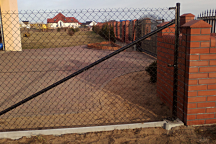

Produkcja i montaż siatki ogrodzeniowej oraz kompletnych ogrodzeń
Specjalizujemy się w produkcji siatki oraz słupków ogrodzeniowych, a także montażem całych ogrodzeń (wraz z bramami i furtkami) z produkowanych przez nas elementów ogrodzeń głównie na terenie województwa zachodniopomorskiego.
Kontakt: +48 604 071 296 – Szulc Zbigniew. (do godziny 19:00) Serdecznie zapraszamy do współpracy.
Wykonywaliśmy ogrodzenia m. in. w okolicach miejscowości: Szczecin, Kołobrzeg, Mielno, Ustronie Morskie, Połczyn Zdrój, Białogard, Koszalin, Szczecinek, Darłówko, Krosino, Bobolice, Łazy, Stary Chwalim, oraz wielu innych, a także za granicą: Niemcy, Szwecja.
Jakość wykonywanych przez nas ogrodzeń i nasza praca cieszy się dużym zadowoleniem naszych klientów.
Posiadamy pełen asortyment akcesorii do ogrodzeń oraz siatkę ogrodzeniową i słupki w dowolnych rozmiarach i wysokościach. Przykładowe realizcje możecie Państwo zobaczyć w dziale realizacje.
Oferujemy również usługi transportowe do 1 tony.
Przykładowe realizacje
Ogrodzenie drewniane

Ogrodzenie w Szwecji
Ogrodzenie w miejscowości Czarna Łąka
Ogrodzenia w miejscowości Jamno (5 ogrodzeń)
Ogrodzenie w miejscowości Słomino
Pozostałe realizacje (m.in. ogrodzenia przepompowni)
Oferta
Przykładowe elementy ogrodzenia przedstawione zostały poniżej. Jeśli jednak jakiegoś elementu nie ma w ofercie na stronie internetowej – zapytaj o niego.
Siatka ogrodzeniowa - z drutu ocynkowanego, z drutu ocynkowanego i powlekanego tworzywem PCV (kolor zielony, brązowy), oczka 45mm, 50mm, 60mm, 75mm oraz inne.
Słupki ogrodzeniowe - wysokość dowolna, fi 42mm, fi 48mm (inne na zamówienie). Powlekane lub malowane ręcznie. Słupek kompletny, posiada przelotki z wkrętem oraz czapeczkę, gotowy do zamontowania.
Bramy wjazdowe oraz furtki – Brama standardowo o długości 3,5 m oraz furtka długości 1 m i wysokości 150 cm. Inne wymiary również dostępne.
Akcesoria ogrodzeniowe – obejmy, napinacze, przelotki, śruby, druty naciągowe, komplety narożne, oraz inne.
Skontaktuj się
Produkcja i Montaż Siatki Ogrodzeniowej “Szulc Zbigniew”
ul. Koszalińska 6b, 78-220 Tychowo k/Koszalina
kom. 604 071 296
szulc.zbyszek@gmail.com
Czynne: pn. – pt. od 9 do 18, sobota od 9 do 15
Gdzie nas szukać
Zobacz na mapie jak nas znaleźć: Produkcja i Montaż Siatki Ogrodzeniowej “Szulc Zbigniew” na Google Maps